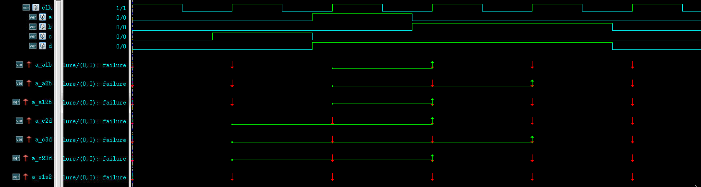
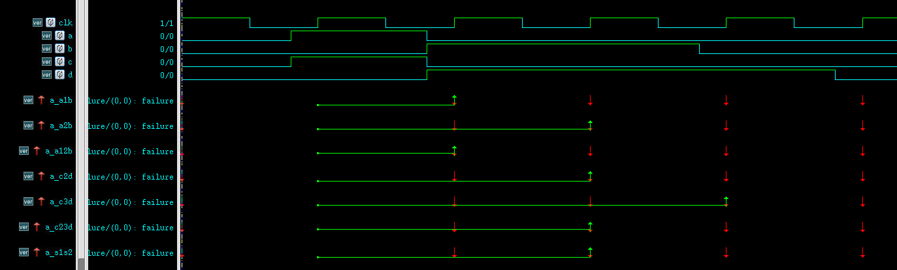

SVA的property起始于先行算子终止于后行算子。
这个概念有时会在并行检测的时候用到，比如说有一个property要检测“每个周期，当察看到信号a有向上跳变时，信号b在两个周期后为0 或者 信号c在一个周期后为1”。
- 信号b在两个周期后为0
- 信号c在一个周期后为1
这里两个后行算子在逻辑上是并列的，但他们共享一个先行算子，且结束时间上不一样，信号c的检测时间要早于b一个周期。
如果写成下面这样是不行的。
1 | property; |
两个后行算子会变成串行。
可以利用 or 操作符来进行并行检测。
1 | property; |
((##1 c) or (##2 !b)) 以 $rose(a) 作为先行条件，((##1 c) 和 (##2 !b)) 并行执行。
整个property的起点是$rose(a)，终点的判定要看情况。
- 如果 ((##1 c) 和 (##2 !b)) 有一个成功，那么以成功的时刻为终点
- 如果 ((##1 c) 和 (##2 !b)) 都没成功，那么以最终失败，即时间更长 (##2 !b)) 为终点
同理还有 and 操作符，可以检测同时成立的并行。
以上操作在默认情况下都是起点同步，即并行执行同时开始。如果要想实现并行执行同步结束，则要借助sequence中的ended操作符。
ended是sequence才有的操作符，表示sequence的结束事件，需要配合定义sequence使用。
1 | sequence s1(); |
上面的property指定s1和s2的结束点同步，只有在s1和s2同时成功结束时才成功。
除此之外，和起始、结束联系更紧密的是一系列match操作符。
交集操作符intersect
intersect并不是sequence的特有操作符，不定义sequence而用表达式也可以使用intersect。
intersect顾名思义是交集，“时间上的, 且成功了的” 交集。换句话说，intersect连接的两个子表达式而形成的组合表达式想要成功，必须要两个子表达式在“同一时间段内，同时开始，同时结束，同时成功” 或者说 “首尾之间都成功”才算成功。
sequence a1b();
a ##1 b;
endsequence
sequence a2b();
a ##2 b;
endsequence
sequence a12b();
a ##[1:2] b;
endsequence
sequence c2d();
c ##2 d;
endsequence
sequence c3d();
c ##3 d;
endsequence
sequence c23d();
c ##[2:3] d;
endsequence
property p_a1b();
@(posedge clk) a1b;
endproperty
property p_a2b();
@(posedge clk) a2b;
endproperty
property p_a12b();
@(posedge clk) a12b;
endproperty
property p_c2d();
@(posedge clk) c2d;
endproperty
property p_c3d();
@(posedge clk) c3d;
endproperty
property p_c23d();
@(posedge clk) c23d;
endproperty
property p_s1s2();
@(posedge clk)
a12b intersect c23d;
endproperty
a_a1b: assert property(p_a1b());
a_a2b: assert property(p_a2b());
a_a12b: assert property(p_a12b());
a_c2d: assert property(p_c2d());
a_c3d: assert property(p_c3d());
a_c23d: assert property(p_c23d());
a_s1s2: assert property(p_s1s2());- intersect失败

property a12b 和 property c23d 没有满足“同一时间段内，同时开始，同时结束，同时成功”的条件，所以没有成功。
- intersect成功

property a12b 和 property c23d 满足“同一时间段内，同时开始，同时结束，同时成功”的条件，所以成功。